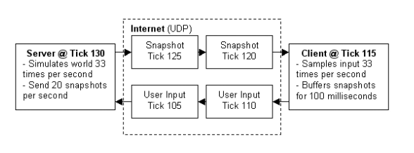

在一些特定情况下，单元格中会出现文本形式存储的数字，例如从其他地方复制粘贴过来，或者是较长的数字想要完全显示，设置为文本格式。如果是这样的单元格，在左上角就会有一个绿色小标记。

针对不同需求的单元格，进行数据处理的方式也不同。例如有些数字，在后面是需要进行公式计算的，就可以将单元格从文本转化为普通的数字形式。选中需要修改的单元格，如果在一个区域的话可以选中全部的，然后点击右上角浮动的感叹号，在菜单里面选择“转换为数字”。
在一些特定情况下，单元格中会出现文本形式存储的数字，例如从其他地方复制粘贴过来，或者是较长的数字想要完全显示，设置为文本格式。如果是这样的单元格，在左上角就会有一个绿色小标记。
针对不同需求的单元格，进行数据处理的方式也不同。例如有些数字，在后面是需要进行公式计算的，就可以将单元格从文本转化为普通的数字形式。选中需要修改的单元格，如果在一个区域的话可以选中全部的，然后点击右上角浮动的感叹号，在菜单里面选择“转换为数字”。
中英对照的网络游戏术语
AC – Armor Class，盔甲等级、级别
Account – 账号，与密码Password相对
过去的 10 年里，很多公司都在使用蓝绿部署（发布）来实现热部署，这种部署方式具有安全、可靠的特点。蓝绿部署虽然算不上“ Sliver Bullet”，但确实很实用。
蓝绿部署是最常见的一种0 downtime部署的方式，是一种以可预测的方式发布应用的技术，目的是减少发布过程中服务停止的时间。蓝绿部署原理上很简单，就是通过冗余来解决问题。通常生产环境需要两组配置（蓝绿配置），一组是active的生产环境的配置（绿配置），一组是inactive的配置（蓝绿配置）。用户访问的时候，只会让用户访问active的服务器集群。在绿色环境（active）运行当前生产环境中的应用，也就是旧版本应用version1。当你想要升级到version2 ，在蓝色环境（inactive）中进行操作，即部署新版本应用，并进行测试。如果测试没问题，就可以把负载均衡器／反向代理／路由指向蓝色环境了。随后需要监测新版本应用，也就是version2 是否有故障和异常。如果运行良好，就可以删除version1 使用的资源。如果运行出现了问题，可以通过负载均衡器指向快速回滚到绿色环境。
蓝绿部署的优点：
这种方式的好处在你可以始终很放心的去部署inactive环境，如果出错并不影响生产环境的服务，如果切换后出现问题，也可以在非常短的时间内把再做一次切换，就完成了回滚。而且同时在线的只有一个版本。蓝绿部署无需停机，并且风险较小。
(1) 部署版本1的应用（一开始的状态），所有外部请求的流量都打到这个版本上。
(2) 部署版本2的应用，版本2的代码与版本1不同(新功能、Bug修复等)。
(3) 将流量从版本1切换到版本2。
(4) 如版本2测试正常，就删除版本1正在使用的资源（例如实例），从此正式用版本2。
从过程不难发现，在部署的过程中，应用始终在线。并且，新版本上线的过程中，并没有修改老版本的任何内容，在部署期间，老版本的状态不受影响。这样风险很小，并且，只要老版本的资源不被删除，理论上，可以在任何时间回滚到老版本。
蓝绿部署的弱点：
使用蓝绿部署需要注意的一些细节包括：
1、当切换到蓝色环境时，需要妥当处理未完成的业务和新的业务。如果数据库后端无法处理，会是一个比较麻烦的问题。
2、有可能会出现需要同时处理“微服务架构应用”和“传统架构应用”的情况，如果在蓝绿部署中协调不好这两者，还是有可能导致服务停止；
3、需要提前考虑数据库与应用部署同步迁移/回滚的问题。
4、蓝绿部署需要有基础设施支持。
5、在非隔离基础架构（ VM 、 Docker 等）上执行蓝绿部署，蓝色环境和绿色环境有被摧毁的风险。
6、另外，这种方式不好的地方还在于冗余产生的额外维护、配置的成本，以及服务器本身运行的开销。
蓝绿部署适用的场景：
1、不停止老版本，额外搞一套新版本，等测试发现新版本OK后，删除老版本。
2、蓝绿发布是一种用于升级与更新的发布策略，部署的最小维度是容器，而发布的最小维度是应用。
3、蓝绿发布对于增量升级有比较好的支持，但是对于涉及数据表结构变更等等不可逆转的升级，并不完全合适用蓝绿发布来实现，需要结合一些业务的逻辑以及数据迁移与回滚的策略才可以完全满足需求。
国内的网络游戏多是客户端/服务器方式，而对于游戏实时性要求比较高的网游，如 果采用客户端发送时间包给服务器，服务器校验后再下发给客户端表现的话，网络延时 和抖动都会恶化游戏体验。对于客户端和服务器的同步问题， 一般有两种算法解决：
① 、客户端和服务器之间进行对时后，客户端发送数据包给服务器，服务器根据收 到的客户端数据包先后进行排序，先到达的服务器端的事件包被判定为先发生，后到达 服务器的事件包被判定为后发生。在此情况下，往往网络延时较大的客户端先发送了游 戏事件包，但由于网络延时和抖动的影响，后到达服务器，而被判定为后发生时间，这 样对该客户端就不公平了。
② 、客户端和服务器进行对时后，客户端预测服务器收到客户端数据包的时间，并 把该时间写入数据包中发送给服务器，在网络抖动比较大的情况下，这种情况可以保证一定的公平性。但是还是出现了上述的情况，网络延时大的数据包预测的到达时间也就 更晚，依然会出现先发生的事件被服务器判定为后发生，同样不能保证游戏的公平性。
Source引擎的多人游戏使用基于UDP通信的C/S架构。游戏以服务器逻辑作为世界权威，客户端和服务器通过UDP协议(20~30packet/s）通信。客户端从服务器接收信息并基于当前世界状态渲染画面和输出音频。客户端以固定频率发送操作输入到服务器。客户端仅与游戏服务器，而不是彼此之间通信。多人游戏必须处理基于网络消息同步所带来的一系列问题。
网络的带宽是有限的，所以服务器不能为每一个世界的变化发送新的更新数据包发送到所有客户端。相反，服务器以固定的频率取当前世界状态的快照并广播这些快照到客户端。网络数据包需要一定的时间量的客户端和服务器（RTT的一半）来往。这意味着客户端时间相对服务器时间总是稍有滞后。此外，客户端输入数据包同步到服务器也有一定网络传输时间，所以服务器处理客户端输入也存在延迟的。不同的客户端因为网络带宽和通信线路不同也会存在不同的网络延时。随着服务器和客户端之间的这些网络延迟增大, 网络延迟可能会导致逻辑问题。比如在快节奏的动作游戏中，在几毫秒的延迟甚至就会导致游戏卡顿的感觉，玩家会觉得很难打到对方玩家或运动的物体。此外除了带宽限制和网络延迟还要考虑网络传输中会有消息丢失的情况。
